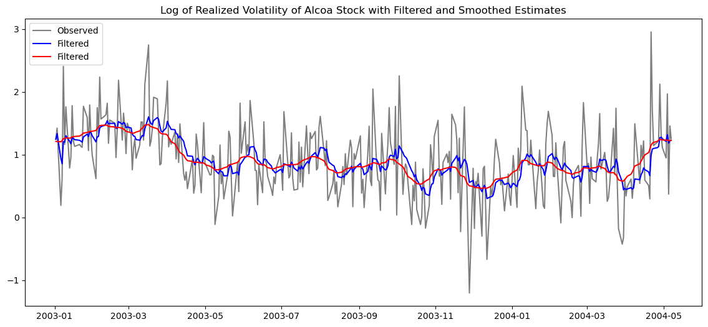

import pandas as pd
import numpy as np
import matplotlib.pyplot as plt
from statsmodels.tsa.arima.model import ARIMA # for fitting ARIMA models
from datetime import datetime, timedelta
from time import time
from statsmodels.tsa.stattools import adfuller # for running adf test
from statsmodels.tsa.stattools import kpss # for running kpss test
from statsmodels.tsa.stattools import acf, pacf # for calculating actual acf and pcf values
from statsmodels.graphics.tsaplots import plot_acf, plot_pacf # for plotting acf, pacfState-Space Model
The state-space model assumes that there are 2 layers of reality:
- a hidden layer (or state) - the true underlying state of the system which can never be directly observed
- an observable layer (or measurement) - a measurement of that true hidden state which is all we can see
First we’ll look at the most basic state-space model: the local trend model
Local Trend Model
\[ y_t = \mu_t + e_t, \quad e_t \sim N(0, \sigma^2_e), \tag{11.1} \] \[ \mu_{t+1} = \mu_t + \eta_t, \quad \eta_t \sim N(0, \sigma^2_\eta), \tag{11.2} \]
Equation (11.1) is called the observation equation - shows how our observable layer changes over time - can see that measurements are our hidden state + measurement noise
Equation (11.2) is called the state or transition state equation - models how our hidden layer evolves over time - it’s essentially VAR on the hidden state: next state = past state + transition noise (random showcks to hidden state)
In the local trend model we assume that our hidden state follows a random walk and that our observation is simply our state plus noise, but this is not a rule nor is it the best case all of the time.
State-space models can take on many forms depending on our assumptions about the underlying dynamics of our data.
In fact, most models in econometrics and time series (ARMA, ARIMA, VAR, etc.) can be rewritten as state-space representations, with varying state/observation equations, which we will see later.
Statistical Inference
There are essentially 3 different types of Inference:
(let \(\mu_t\) = hidden state, and \(F_t = \{y_1, \dots, y_t\}\): “all data up to and including time t”)
- Filtering - estimating \(\mu_t\) using \(F_t\)
- we’re at time t, and have seen everything up to t, and want to guess the current hidden state; what Kalman Filter does
- Prediction - estimating \(\mu_{t+h}\) using \(F_t\)
- we’re at time t, and have seen everything up to t, and want to forecast h steps ahead. We haven’t seen past t
- Smoothing - estimating \(\mu_t\) using \(F_T\), where \(T > t\)
- we’ve seen the entire dataset, everything up to T, and want to go back and re-estimate what \(\mu_t\) was at some earlier point; what the Kalman Smoother does
- this always gives better estimates than filtering because we have more information
Local Trend Model Kalman - Manual Implementation
For my first exercise, I’ll be implementing a Kalman filter on the log of the realized volatility of Alcoa stock from January 2, 2003 to May 7, 2004.
Step 1: Defining the State-Space Model
Before I can implement the Kalman Filter, i need to define what state-space model represents this data best. First I’ll import and inspect the data. Then I’ll try fitting standard Time Series models and see what works, and then transform to state-space form.
alcoa = pd.read_csv("alcoa_log_rv.csv", index_col = 0, parse_dates = True)
print(alcoa.shape)
alcoa.head(10)
(340, 1)| x | |
|---|---|
| 2003-01-02 | 1.245451 |
| 2003-01-03 | 1.422385 |
| 2003-01-06 | 0.192602 |
| 2003-01-07 | 0.627168 |
| 2003-01-08 | 2.405115 |
| 2003-01-09 | 1.163619 |
| 2003-01-10 | 1.760922 |
| 2003-01-13 | 0.785726 |
| 2003-01-14 | 0.954357 |
| 2003-01-15 | 1.779349 |
# explictly set frequency to business days
alcoa = alcoa.asfreq('B')
print(pd.infer_freq(alcoa.index))
print(alcoa.x.isna().sum()) # how many NaNs?
print(alcoa.x.isna().mean()) # what fraction?B
12
0.03409090909090909alcoa = alcoa.dropna()
alcoa.shape(340, 1)fig, ax = plt.subplots(figsize=(14, 6))
# observed
ax.plot(alcoa.index, alcoa['x'], color='navy', label='Observed', alpha=1)
ax.set_title("Log of Realized Volatility of Alcoa Stock")
ax.legend()
plt.show()
Looking at the data, we notice a few things: - there’s no obvious mean; it wanders around without reverting to a fixed level - shocks seem to be somewhat persistent
This leads me to believe that this series is non-stationary.
I’ll do some formal checks now
def perform_adf_kpss_tests(series):
adf_result = adfuller(series)
print('ADF Statistic: %f' % adf_result[0])
print('p-value: %f' % adf_result[1])
kpss_result = kpss(series)
print('KPSS Statistic: %f' % kpss_result[0])
print('p-value: %f' % kpss_result[1])
perform_adf_kpss_tests(alcoa.x)ADF Statistic: -5.499503
p-value: 0.000002
KPSS Statistic: 1.171610
p-value: 0.010000/var/folders/2w/snn2ch354_s3_1yf6tsg1xb00000gn/T/ipykernel_91495/2197700585.py:7: InterpolationWarning: The test statistic is outside of the range of p-values available in the
look-up table. The actual p-value is smaller than the p-value returned.
kpss_result = kpss(series)- ADF p-value <0.05 -> reject null, series has no unit root
- KPSS p-value <0.05 -> reject null, series is non-stationary
This contradiction would be problematic with other series, but for log realized volatility it is normal – it usually means the series is near-integrated: highly persistent but not quite a unit root. It behaves like a random walk in finite samples but is technically stationary.
Despite ADF suggesting stationarity, we’ll follow Tsay’s empirical approach and proceed with ARIMA identification including first differencing.
Following Tsay (2005, Chapter 11), we’ll fit an ARIMA(0,1,1) model to the log realized volatility series, which corresponds to the local trend state-space model. We’ll use this as the basis for implementing and verifying our Kalman filter.
# define model
arima_011 = ARIMA(alcoa, order = (0,1,1))/Users/calebwilliams/opt/anaconda3/lib/python3.12/site-packages/statsmodels/tsa/base/tsa_model.py:473: ValueWarning: A date index has been provided, but it has no associated frequency information and so will be ignored when e.g. forecasting.
self._init_dates(dates, freq)
/Users/calebwilliams/opt/anaconda3/lib/python3.12/site-packages/statsmodels/tsa/base/tsa_model.py:473: ValueWarning: A date index has been provided, but it has no associated frequency information and so will be ignored when e.g. forecasting.
self._init_dates(dates, freq)
/Users/calebwilliams/opt/anaconda3/lib/python3.12/site-packages/statsmodels/tsa/base/tsa_model.py:473: ValueWarning: A date index has been provided, but it has no associated frequency information and so will be ignored when e.g. forecasting.
self._init_dates(dates, freq)# fit the model
start = time()
arima_011_fit = arima_011.fit()
end = time()
print('Model Fitting Time', end - start)Model Fitting Time 0.056204795837402344# summary of model
print(arima_011_fit.summary()) SARIMAX Results
==============================================================================
Dep. Variable: x No. Observations: 340
Model: ARIMA(0, 1, 1) Log Likelihood -258.975
Date: Thu, 28 May 2026 AIC 521.950
Time: 01:42:43 BIC 529.602
Sample: 0 HQIC 525.000
- 340
Covariance Type: opg
==============================================================================
coef std err z P>|z| [0.025 0.975]
------------------------------------------------------------------------------
ma.L1 -0.8582 0.033 -26.102 0.000 -0.923 -0.794
sigma2 0.2688 0.016 16.723 0.000 0.237 0.300
===================================================================================
Ljung-Box (L1) (Q): 2.10 Jarque-Bera (JB): 29.11
Prob(Q): 0.15 Prob(JB): 0.00
Heteroskedasticity (H): 1.56 Skew: 0.31
Prob(H) (two-sided): 0.02 Kurtosis: 4.30
===================================================================================
Warnings:
[1] Covariance matrix calculated using the outer product of gradients (complex-step).theta_hat = 0.8582
sigma_a_hat = np.sqrt(0.2688)
print(theta_hat)
print(sigma_a_hat)0.8582
0.5184592558726288So our ARIMA(0,1,1) model can be written as
\[(1− B)y_t = (1− 0.858B)a_t, \] \[\hat{\sigma_a} = 0.5184\]
(integrated MA(1))
How we believe the system looks: \[ y_t = \mu_t + e_t, \quad e_t \sim N(0, \sigma^2_e) \] \[ \mu_{t+1} = \mu_t + \eta_t, \quad \eta_t \sim N(0, \sigma^2_\eta) \]
But we have no way of directly observing \(\sigma^2_e\) or \(\sigma^2_\eta\)
However, we can and have gotten \(\hat{\sigma_a}\) \(\hat{\theta_a}\) by fitting ARIMA(0,1,1) on our data \(y_t\)
We know that since state-space and ARIMA(0,1,1) are describing the same data, there must be a mathematical equivalence where we can solve for \(\sigma^2_e\) and \(\sigma^2_\eta\)
That relationship is given as: \[ \sigma^2_\eta + 2\sigma^2_e = (1 + \theta^2)\sigma^2_a \] \[ \sigma^2_e = \theta\sigma^2_a \]
# Solving for our state-space parameters:
sigma_e_squared = theta_hat*sigma_a_hat**2
sigma_eta_squared = ((1 + theta_hat**2) * sigma_a_hat**2) - 2*sigma_e_squared
sigma_e = np.sqrt(sigma_e_squared)
sigma_eta = np.sqrt(sigma_eta_squared)
print(sigma_e)
print(sigma_eta)0.480295908789571
0.07351752248273873Now we have our state-space parameters \(\hat{\sigma^2_e}\) and \(\hat{\sigma^2_\eta}\)
Notice what each tells us about our data: - $ = 0.480 $ - \(\hat{\sigma_\eta} = 0.0735\)
\(\hat{\sigma_e}\) is nearly 6 times larger than \(\hat{\sigma_\eta}\)!
This means that the true underlying volatility \(\mu_t\) moves about 0.07 units/day on average, but our observation is off by about 0.48 units just from measurement noise.
So, on any given day, a big move in log realized volatility is mostly noise, not real change in underlying volatility.
Step 2: Setting up Kalman Filter
Now that we’ve completed the parameter estimation step, we have the components of our local trend model to be used in the Kalman Filter, and can move on to the actual steps of the filter.
Our local-trend model:
\[ y_t = \mu_t + e_t, \quad e_t \sim N(0, \sigma^2_e) \] \[ \mu_{t+1} = \mu_t + \eta_t, \quad \eta_t \sim N(0, \sigma^2_\eta) \]
where - $_e = 0.480 $ - \(\sigma_\eta = 0.0735\)
The Kalman Filter Algorithm for a local trend model is as follows:
At each time step t we run 7 equations in order:
\[ v_t = y_t - \mu_{t|t-1} \tag{compute innovation/forecast error}\]
\[ V_t = \Sigma_{t|t-1} + \sigma^2_e \tag{compute innovation variance}\]
\[ K_t = \frac{\Sigma_{t|t-1}}{V_t} \tag{Kalman Gain}\]
\[ \mu_{t|t} = \mu_{t|t-1} + K_tv_t \tag{update state estimate}\]
\[ \Sigma_{t|t} = \Sigma_{t|t-1}(1 - K_t) \tag{update state uncertainty}\]
\[ \mu_{t+1|t} = \mu_{t|t} \tag{predict state estimate at t + 1}\]
\[ \Sigma_{t+1|t} = \Sigma_{t|t} + \sigma^2_\eta \tag{predict state uncertainty at t + 1 }\]
We also need to initialize \(\Sigma_1|0\) and \(\mu_1|0\) before we can run our Filter.
We’ll set
- \(\Sigma_1|0 = \infty\)
- \(\mu_1|0 = anything\)
This is diffuse initalization, where we have no prior knowledge of our initial state \(\mu_1|0\), so we set \(\mu_1|0\) to anything and \(\Sigma_1|0\) to a very large value (meaning we have huge uncertainty about our estimate for \(\mu_1|0\)). We trust that the filter will cause \(\mu_t|t\) and \(\Sigma_1|0\) to eventually converge.
alcoa.head()| x | |
|---|---|
| 2003-01-02 | 1.245451 |
| 2003-01-03 | 1.422385 |
| 2003-01-06 | 0.192602 |
| 2003-01-07 | 0.627168 |
| 2003-01-08 | 2.405115 |
# initialize
v = [None] # innovation
V = [None] # variance of innovation
K = [None] # Kalman Gain
mu = [None] # filtered state estimate; indexing 1 means mu_1|1
sig = [None] # filtered state variance estimate; indexing 1 means sig_1|1
mu_pred = [None] # prediction of state at t+1; indexing 1 means mu_1|0
sig_pred = [None] # prediction of state variance at t+1; indexing 1 means sig_1|0
# set initial parameters - diffuse initialization
mu_pred.append(0)
sig_pred.append(10**6)
# also know from earlier
print(sigma_e_squared)
print(sigma_eta_squared)0.23068415999999992
0.005404826111999994y = alcoa['x']
T = len(y)
print(T)340for t in range(1, T+1):
# innovation
v_t = y.iloc[t-1] - mu_pred[t]
v.append(v_t)
# variance of innovation
V_t = sig_pred[t] + sigma_e_squared
V.append(V_t)
# Kalman gain
K_t = sig_pred[t]/V_t
K.append(K_t)
# filtered state estimate
mu_t_t = mu_pred[t] + K_t*v_t
mu.append(mu_t_t)
# filtered state variance estimate
sig_t_t = sig_pred[t]*(1-K_t)
sig.append(sig_t_t)
# prediction of state at t+1
mu_pred_t = mu_t_t
mu_pred.append(mu_pred_t)
# prediction of state variance at t+1
sig_pred_t = sig_t_t + sigma_eta_squared
sig_pred.append(sig_pred_t)
print(v[:10])
print(V[:10])
print(K[:10])
print(mu[:10])
print(sig[:10])
print(mu_pred[:10])
print(sig_pred[:10])[None, 1.24545058377224, 0.1769348847976555, -1.1423402385602917, -0.31244313945232227, 1.5498032003292557, -0.043104063319227226, 0.5628243326174625, -0.5151999221545392, -0.25852055692641507]
[None, 1000000.23068416, 0.46677309292870306, 0.3527666138566501, 0.31592218804336003, 0.2983291947564786, 0.2883957609608608, 0.2822517734759867, 0.2782351574235674, 0.2755134139930492]
[None, 0.9999997693158932, 0.5057895078043078, 0.34607145081552265, 0.2698070324571862, 0.22674627875993253, 0.20011251472136962, 0.1827007598248945, 0.17090218886745112, 0.16271169284766754]
[None, 1.2454502964665846, 1.3349421047618026, 0.9396107610782922, 0.8553114048110544, 1.2067235132959473, 1.1980978507904276, 1.3009262840075773, 1.212877489607026, 1.1708131721536073]
[None, 0.23068410681670315, 0.11667762774465015, 0.07983320193136012, 0.062240208644478705, 0.05230677484886086, 0.046162787363986775, 0.04214617131156752, 0.039424427881049294, 0.03753501018674218]
[None, 0, 1.2454502964665846, 1.3349421047618026, 0.9396107610782922, 0.8553114048110544, 1.2067235132959473, 1.1980978507904276, 1.3009262840075773, 1.212877489607026]
[None, 1000000, 0.23608893292870314, 0.12208245385665015, 0.08523802804336011, 0.0676450347564787, 0.05771160096086085, 0.05156761347598677, 0.04755099742356751, 0.04482925399304929]# Kalman Smoother Implementation
# initialization
q = [None] * T
M = [None]* T
mu_smooth = [None] * (T+1) # represents mu_t|T; indexing 1 means mu_1|T
sig_smooth = [None] * (T+1)# represents sig_t|T; indexing 1 means sig_1|T
# set initial q_T and M_T
q.append(0)
M.append(0)for t in range(T, 0, -1):
L_t = (1 - K[t])
# q
q_prev = v[t]/V[t] + L_t*q[t]
q[t-1] = q_prev
# smoothed state estimate
mu_t = mu_pred[t] + (sig_pred[t] * q[t-1])
mu_smooth[t] = mu_t
# M
M_prev = 1/V[t] + ((L_t)**2)*M[t]
M[t-1] = M_prev
# smoothed state variance estimate
sig_t = sig_pred[t] - (sig_pred[t]**2)*M[t-1]
sig_smooth[t] = sig_t
print(q[:5])
print(q[-5:])
print(M[:5])
print(M[-5:])
print(mu[T]) # should be same as last value of mu_smooth
print(mu_smooth[-1:])
print(sig[T]) # should be same as last value of sig_smooth
print(sig_smooth[-1:])
print(y.iloc[0])
# t = 1 of mu_smooth should be close to y_1
# t = 1 of sig_smooth should be finite and data-drivetn
print(mu_smooth[1])
print(sig_smooth[1])[1.2108900785268976e-06, -0.14981620717871003, -1.070143087385408, 3.3154833226574394, 5.894977293488771]
[0.6329189291823907, -2.5431392654625062, 1.1319311056571293, 0.1326766248646112, 0]
[9.999999672889873e-07, 3.7202388313041896, 6.46022092902277, 8.478237581462894, 9.964521456425608]
[9.964521162357537, 8.478237182189057, 6.460220386904764, 3.7202380952380962, 0]
1.227144114247882
[1.227144114247882]
0.03271101388799999
[0.03271101388799999]
1.24545058377224
1.2108900785268977
0.03271101275458932print(len(mu))
print(len(mu_smooth))
print(len(sig))
print(len(sig_smooth))341
341
341
341alcoa["filtered_state"] = mu[1:] alcoa["filtered_var"] = sig[1:]alcoa["smoothed_state"] = mu_smooth[1:]alcoa["smoothed_var"] = sig_smooth[1:]alcoa| x | filtered_state | filtered_var | smoothed_state | smoothed_var | |
|---|---|---|---|---|---|
| 2003-01-02 | 1.245451 | 1.245450 | 0.230684 | 1.210890 | 0.032711 |
| 2003-01-03 | 1.422385 | 1.334942 | 0.116678 | 1.210080 | 0.028730 |
| 2003-01-06 | 0.192602 | 0.939611 | 0.079833 | 1.204296 | 0.025799 |
| 2003-01-07 | 0.627168 | 0.855311 | 0.062240 | 1.222216 | 0.023639 |
| 2003-01-08 | 2.405115 | 1.206724 | 0.052307 | 1.254077 | 0.022049 |
| ... | ... | ... | ... | ... | ... |
| 2004-05-03 | 0.947518 | 1.209930 | 0.032711 | 1.230634 | 0.022049 |
| 2004-05-04 | 1.966721 | 1.317243 | 0.032711 | 1.234054 | 0.023639 |
| 2004-05-05 | 0.372529 | 1.183283 | 0.032711 | 1.220309 | 0.025799 |
| 2004-05-06 | 1.456939 | 1.222087 | 0.032711 | 1.226427 | 0.028730 |
| 2004-05-07 | 1.257751 | 1.227144 | 0.032711 | 1.227144 | 0.032711 |
340 rows × 5 columns
fig, ax = plt.subplots(figsize=(14, 6))
# observed
ax.plot(alcoa.index, alcoa['x'], color='black', label='Observed', alpha=0.5)
# filtered
ax.plot(alcoa.index, alcoa['filtered_state'], color='blue', label='Filtered')
# smoothed
ax.plot(alcoa.index, alcoa['smoothed_state'], color='red', label='Filtered')
ax.set_title("Log of Realized Volatility of Alcoa Stock with Filtered and Smoothed Estimates")
ax.legend()
plt.show()
# Setting up 95% confidence intervals of filtered and smoothed estimates
# 95% conf interval = estimate +- 1.96 * standard deviation
alcoa["filtered_95_ci_upper"] = alcoa["filtered_state"] + 1.96*np.sqrt(alcoa["filtered_var"])
alcoa["filtered_95_ci_lower"] = alcoa["filtered_state"] - 1.96*np.sqrt(alcoa["filtered_var"])
alcoa["smoothed_95_ci_upper"] = alcoa["smoothed_state"] + 1.96*np.sqrt(alcoa["smoothed_var"])
alcoa["smoothed_95_ci_lower"] = alcoa["smoothed_state"] - 1.96*np.sqrt(alcoa["smoothed_var"])fig, (ax1, ax2) = plt.subplots(2, 1, figsize=(14, 10))
# observed
ax1.plot(alcoa.index, alcoa['x'], color='black', label='Observed', alpha=0.5)
# filtered
ax1.plot(alcoa.index, alcoa['filtered_state'], color='blue', label='Filtered')
ax1.fill_between(alcoa.index,
alcoa['filtered_95_ci_lower'],
alcoa['filtered_95_ci_upper'],
color='blue', alpha=0.2);
ax1.set_title("Filtered Estimates of Log of Realized Volatility of Alcoa Stock + 95% CI Bands")
# observed
ax2.plot(alcoa.index, alcoa['x'], color='black', label='Observed', alpha=0.5)
# smoothed
ax2.plot(alcoa.index, alcoa['smoothed_state'], color='red', label='Smoothed')
ax2.fill_between(alcoa.index, alcoa['smoothed_95_ci_lower'], alcoa['smoothed_95_ci_upper'],
color='red', alpha=0.2);
ax2.set_title("Smoothed Estimates of Log of Realized Volatility of Alcoa Stock + 95% CI Bands")
plt.show()
fig, ax = plt.subplots(figsize=(14, 6))
# observed
# ax.plot(alcoa.index, alcoa['x'], color='black', label='Observed', alpha=0.5)
# filtered
ax.plot(alcoa.index, alcoa['filtered_state'], color='blue', label='Filtered')
ax.fill_between(alcoa.index,
alcoa['filtered_95_ci_lower'],
alcoa['filtered_95_ci_upper'],
color='blue', alpha=0.2);
# smoothed
ax.plot(alcoa.index, alcoa['smoothed_state'], color='red', label='Smoothed')
ax.fill_between(alcoa.index, alcoa['smoothed_95_ci_lower'], alcoa['smoothed_95_ci_upper'],
color='red', alpha=0.2)
ax.set_title("Filtered and Smoothed Estimates of Log of Realized Volatility of Alcoa Stock + 95% CI Bands")
ax.legend()
plt.show()
4) Let’s do some prediction
To predict \(h\) time steps forward, the process is quite simple.
Normally, we would run our filter at each time step, taking in the observation at that point \(y_t\) and computing \(v, V, K\) to get our estimates \(\mu_{t|t}\) and \(\Sigma_{t|t}\), and then running our predict step to find \(\mu_{t+1|t}\) and \(\Sigma_{t+1|t}\)
However, for predicting \(y\) at \(h\) steps ahead, we have no observation \(y_{t+h}\) to input. Thus, we skip the entire estimation step– our estimates are not updated because there’s no observation to change our beliefs–and only run our predict steps \(h\) times.
So for one step ahead, we simply run:
- \(\mu_{T + 1|T} = \mu_{T|T}\)
- \(\Sigma_{T + 1|T} = \Sigma_{T|T} + \sigma^2_{\eta}\)
(notice the estimate \(\mu\) doesn’t change, it just gets carried forward, and the variance \(\Sigma\) adds a transition noise term).
And for \(h\) steps ahead, our Kalman recursion simplifies to:
- \(\mu_{T + h|T} = \mu_{T|T}\)
- \(\Sigma_{T + h|T} = \Sigma_{T|T} + h * \sigma^2_{\eta}\)
(our estimate stays the same as what it was when we last had an observation and our variance increases exponentially with each step)
Now we have a belief about where the hidden state \(\mu\) will be at time \(T+h\), given all data up to \(T\). But you can’t observe \(\mu\), only \(y\) so we need to use the observation equation:
\[y_{T+h} = \mu_{T+h} + e_{T+h} \]
So our forecast of \(y\) is:
- ${T+h} = E(y{T+h}) + E(e_{T+h}) = {T + h|T} + 0 = {T + h|T} $
and variance of forecast error (how uncertain we are of \(y_t\) given \(\mu\)) is:
\(y_{T+h} - \hat{y}_{T+h} = (\mu_{T+h} + e_{T+h}) - \mu_{T+h|T}\)
\(= (\mu_{T+h} - \mu_{T+h|T}) + e_{T+h}\)
\(V_{T+h} = Var(y_{T+h} - \hat{y}_{T+h}) = Var(\mu_{T+h} - \mu_{T+h|T}) + Var(e_{T+h})\)
\(= Var(\mu_{T+h} \mid y_1, \dots, y_T) + \sigma_e^2\)
\(= \Sigma_{T+h|T} + \sigma_e^2\)
Plugging in \(\mu_{T + h|T}\) and \(\Sigma_{T+h|T}\), our h-step forecast of \(y\) is
\(\hat{y}_{T+h} = \mu_{T|T}\)
with forecast error variance
$ V_{T+h} = {T|T} + h^2{} + _e^2$
Let’s try to predict 10 steps ahead.